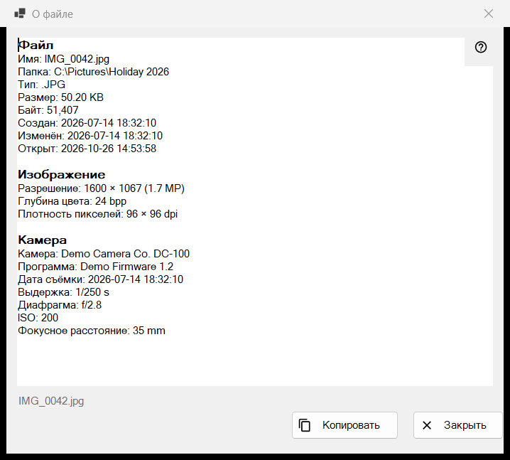
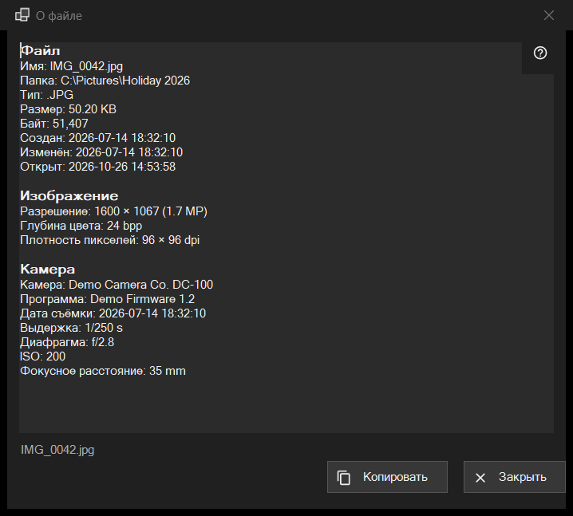

О файле
Назначение
Снимок только для чтения: всё, что программа знает о файле на экране - сам файл, изображение с данными камеры, документ, звуковые и видеодорожки. Окно открывается пунктом «i» первой панели или пунктом «О файле» в блоке «Файл» меню просмотрщика и описывает файл таким, каким он был в момент щелчка.


Порядок действий
- Покажите файл в просмотрщике.
- Нажмите «i» на первой панели или выберите «О файле» в меню.
- Подождите: в строке состояния написано «Чтение метаданных файла..», строки заполняются.
- Прочитайте блоки, выделите нужное и нажмите «Копировать», чтобы положить весь текст в буфер обмена.
- Нажмите «Закрыть» или Esc.
Элементы окна
Файл
Этот блок есть у любого файла: «Имя», «Папка», «Тип», «Размер», «Байт», «Создан», «Изменён», «Открыт» и «Атрибуты». Строка, которой нечего показать, пропускается. Если файл не открыт, строка состояния сообщает «Файл не выбран»; временная копия из архива, сетевой адрес или исчезнувший файл дают «Файл недоступен», и окно не открывается.
Изображение
Для картинки: «Разрешение» в том виде, как её видно на экране (снимок с телефона, записанный боком, показан в прямом размере), «Глубина цвета» и «Плотность пикселей», если файл их хранит.
Камера
Читается из данных EXIF снимка: «Камера», «Программа», «Дата съёмки», «Выдержка», «Диафрагма», ISO, «Фокусное расстояние» и «Автор». «Координаты» есть, только если в снимке записан GPS, и «Копировать» берёт их тоже, поэтому проверьте текст, прежде чем им делиться.
Документ
Для текстового файла: «Строк», «Слов», «Символов» и «Кодировка», а для слишком большого файла ещё «Файл прочитан не полностью». Для электронной книги: «Название» и «Автор». Для PDF: «Страниц».
Медиа, Видео и Аудио
Для звука и видео теги («Название», «Исполнитель», «Альбом», «Год», «Трек», «Жанр», «Режиссёр», «Сериал», «Сезон», «Серия», «Длительность») и первая дорожка каждого вида («Видео»: «Разрешение», «Кадров в секунду», «Кодек», «Битрейт»; «Аудио»: «Кодек», «Каналы», «Частота дискретизации», «Битрейт») появляются чуть позже остального, когда медиадвижок дочитает файл. Окно его не ждёт. Для сетевых потоков строк дорожек нет.
«Копировать» и «Закрыть»
«Копировать» кладёт весь текст в буфер обмена, строка состояния отвечает «Скопировано в буфер обмена»; если буфер занят другой программой, об этом сказано, и кнопку можно нажать ещё раз. Выделенный фрагмент копируется и по Ctrl+C. Если прочитать ничего не удалось, в поле написано «Не удалось прочитать сведения о файле.» Рядом с кнопками строка состояния показывает имя файла. Переход к другому файлу это окно не меняет: нажмите «i» ещё раз для нового файла.